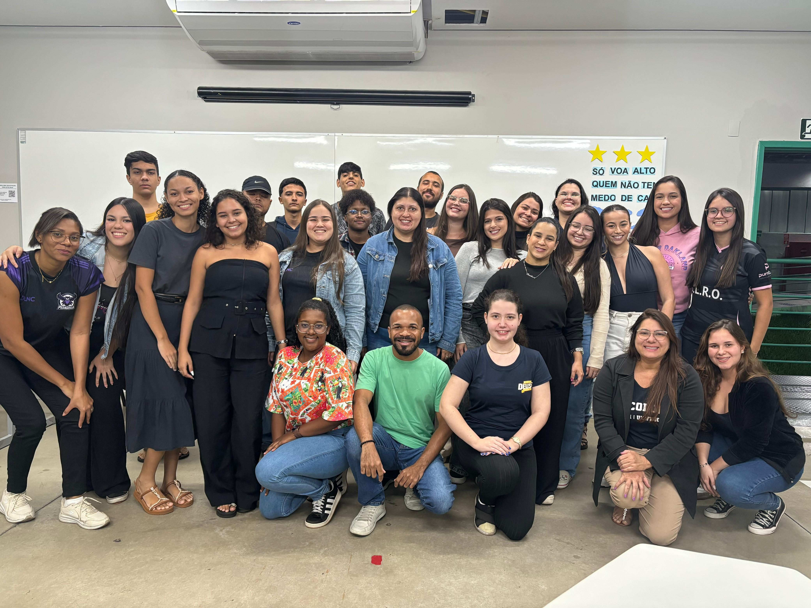

O Projeto Integrador é uma iniciativa acadêmica essencial que visa aplicar, na prática, os conhecimentos adquiridos durante o curso. Ele promove o trabalho em equipe, a criatividade, a inovação e a resolução de problemas reais. Os alunos são desafiados a desenvolver soluções baseadas em demandas da sociedade, empresas ou da própria instituição.
No UNIFAGOC, o Projeto Integrador proporciona aos estudantes uma vivência mais próxima do mercado de trabalho. Através de metodologias ativas, eles constroem soluções tecnológicas, sociais e ambientais, sempre com o acompanhamento de professores orientadores.
Além de desenvolver habilidades técnicas, o projeto estimula a comunicação, liderança, responsabilidade social e ética profissional. A cada semestre, novas temáticas são propostas, com foco em áreas multidisciplinares e colaborativas.
Objetivos do Projeto Integrador
- Promover a interdisciplinaridade entre os conteúdos vistos em sala.
- Estimular a prática de pesquisa e inovação.
- Desenvolver competências profissionais e sociais.
- Proporcionar uma experiência real de resolução de problemas.
Como funciona na prática?
Os alunos são divididos em grupos e, com o auxílio de um professor-orientador, definem um tema ou problema a ser explorado. A partir disso, começam a pesquisar, planejar e executar a proposta, documentando todas as etapas. Ao final do semestre, os resultados são apresentados em uma mostra acadêmica para a comunidade.
Benefícios para os alunos
Participar de um Projeto Integrador é uma excelente oportunidade de destacar-se academicamente, construir um portfólio prático, fortalecer o trabalho em equipe e colocar os conhecimentos adquiridos em ação. Essa vivência prepara os alunos para os desafios reais do mercado de trabalho.